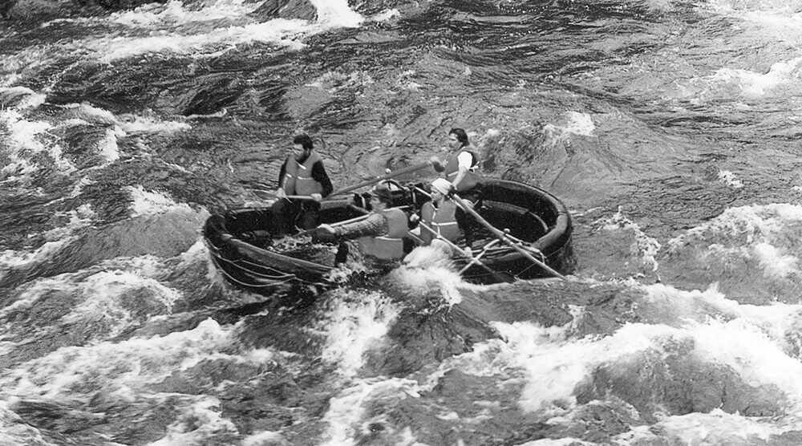

At Dry Oar, we believe in the power of adventure, the thrill of the rapids, and the strength of the river’s current to bring people together. Together, we ride the rapids, chasing the thrill, and always moving forward.
At Dry Oar, we believe in the power of adventure, the thrill of the rapids, and the strength of the river’s current to bring people together. Together, we ride the rapids, chasing the thrill, and always moving forward.
Founded in 2005, Dry Oar began with a simple idea: what if you could experience the thrill of rafting without getting soaked? A group of passionate adventurers set out to create a unique rafting experience, using innovative gear and techniques that kept guests dry while navigating the rapids. The name Dry Oar was a playful twist on the typical wet rafting experience, highlighting the company’s focus on comfort without sacrificing excitement.
By 2008, word spread and the company grew, expanding its operations across the country. By 2012, they had introduced cutting-edge, water-resistant rafts and eco-friendly practices, making them a leader in both adventure and sustainability. Today, Dry Oar is known for offering thrilling, dry rafting adventures while also promoting environmental responsibility. Their commitment to the community and preservation of the rivers they love remains at the core of the company’s goals.